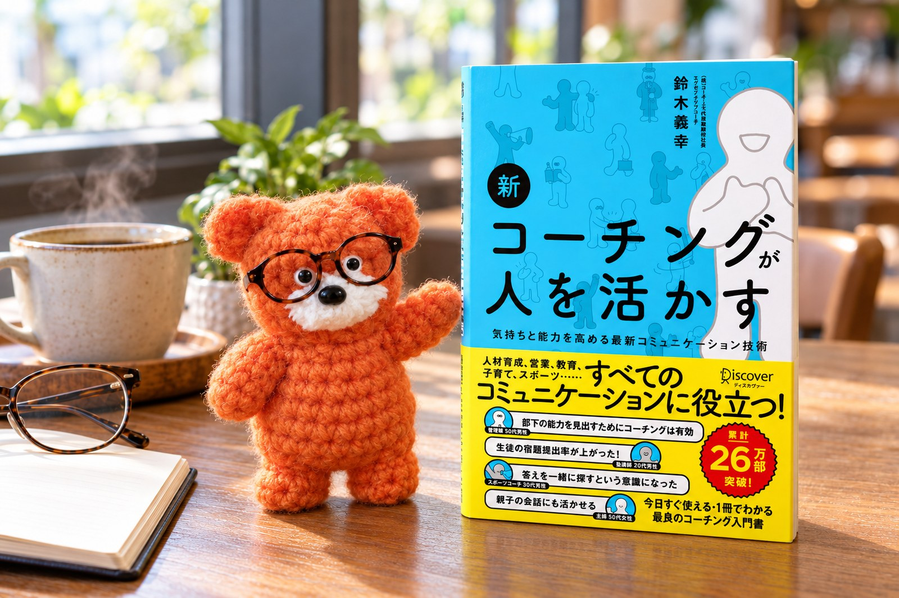

仕事をする上で、生きていく上で。人間関係やコミュニケーションのこと、毎日の仕事が少し進めやすくなること。そういう本を選んで、週に一冊ずつお届けします。

20年ぶりに改訂された、コーチングの定番書。今回はその中の「ほめ方」について書かれた一項目を取り上げます。
2026.10.23 ・ 読むのに約7分 ・ 鈴木義幸／ディスカヴァー・トゥエンティワン
本には、書いた人の人生や、その人がたどり着いた考え方が詰まっています。知識の塊のようなものなので、読む習慣はやっぱりいいものだと思います。ただ、一冊まるごと読むとなると、忙しいときは腰が重い。時間も体力も要ります。
読んで自分の中に溜めていくより、誰かとシェアしてもいい。そう思ってここを始めました。
書いているのは、本の要約と、それを今の仕事に置き換えたらどんな考え方ができるかです。記事の終わりはいつも問いにしています。読んでくれた人が、自分で考えるきっかけになればと思っているからです。
読んでもいいし、読まなくてもいい。ただ、仕事で行き詰まったときや、少し立ち止まりたくなったときに、ふと思い出してもらえたら。考え方をアップデートするきっかけくらいになれば、それで十分です。
そうして生まれた気づきが、また別の誰かに渡っていく。そんなふうに少しずつ広がって、関わってくれる人の毎日がよくなっていったら、いちばん嬉しいです。
記事中の引用は出典を明記しています。書影は各出版社に帰属します。更新のお知らせはLINEでお届けしています。